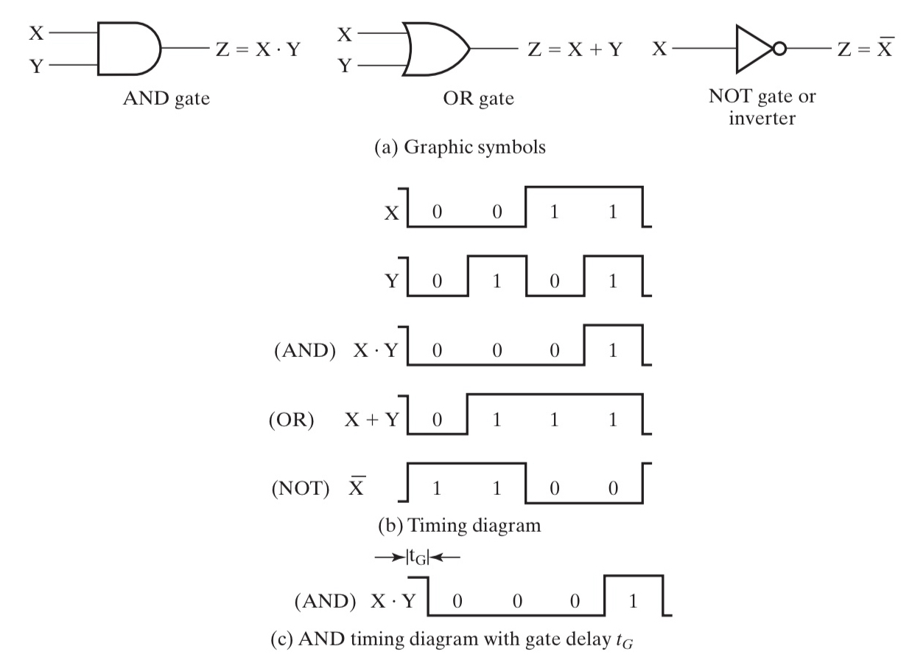
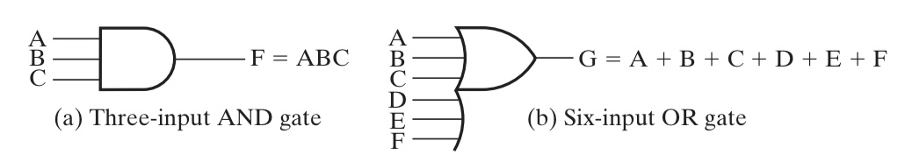
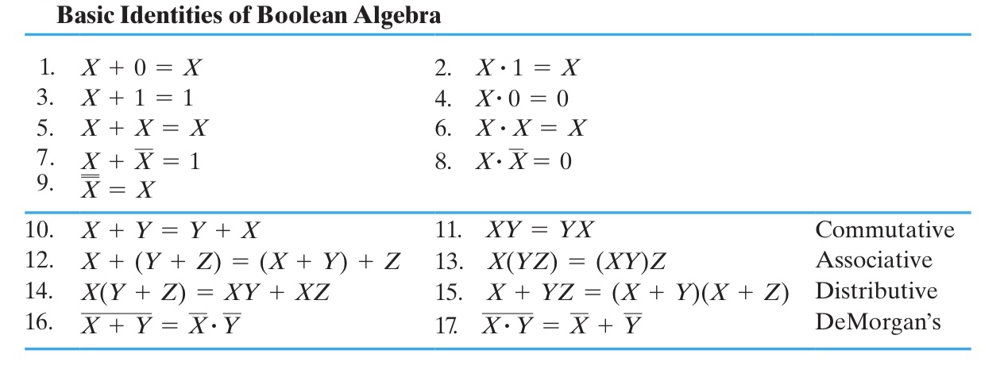

布尔代数与逻辑运算¶
约 4014 个字 25 行代码 预计阅读时间 20 分钟
逻辑运算¶
逻辑运算的对象是布尔变量，也就是 0/1 二值。
主要的运算就是 与(AND)，或(OR)，非(NOT)，异或(XOR)，以及 与非(NAND)，或非(NOR)，同或(XNOR)。
高维
多输入的异或和同或被称为奇函数和偶函数。
可以用它们来实现奇校验和偶校验。
而且观察其卡诺图的形状（棋盘形），可以发现，它们是天然优化的，即不可优化的。
运算规则挺简单的，在此略去。
比较基础的，需要了解与或非的符号表示。
AANDB可写作 \(A\cdot B\) 或者 \(AB\)；AORB可写作 \(A+B\)；1 + 1 = 2读作1 or 1 equals 2而不是1 plus 1 equals 2；
NOT A可写作 \(\overline{A}\)、\(A'\)、\(\sim A\)；
由此可以进行一些组合，例如：
ANORB可写作 \(\overline{A+B}\)；ANANDB可写作 \(\overline{A\cdot B}\)；
再次还需要提到的是 德·摩根定律(De Morgan's Laws)，其表述为：
- \(\overline{A+B} = \overline{A}\cdot\overline{B}\)；
- \(\overline{A\cdot B} = \overline{A}+\overline{B}\)；
逻辑门¶
逻辑门是在硬件层面上实现布尔代数的逻辑单元。其操作对象为高低电平。

如图，(a)中绘制了三个常用逻辑门的符号；(b)中则描述了这些运算在 时序图(timing diagram) 中的状态；(c)则描述了在延时（见下）效应下的时序图。
还有一个注意点是，非门其实更多的被称为 inverter，而非 NOT。
但是由于是物理层面的实现，所以会有一些逻辑运算层面不会出现的问题，比如 延时(delay)。

延时的长短与很多因素有关，取决于逻辑门的实现技术。而且通常来说，对于不同运算参数，其延时也会有不同。
此外，与门和或门可能有更多的输入引脚，如下：

至此，给出了 AND, OR, NOT 三个门的符号表示，类似上一小节提到的那样，我们也可以利用这三个基础的门电路来构成其他的门电路（虽然通常来说，我们可能是通过 NAND + NOT 来实现 AND 的）。
于是又引申出一个概念——通用门(Universal Gate)。一个功能完全的，能够表示其他所有门的逻辑门被称为通用门，在我们学过的逻辑门中，NAND 和 NOR 都是通用门。
推荐阅读
- Title: Universal Logic Gates
- URL: https://www.electronics-tutorials.ws/logic/universal-gates.html
Universal Logic gates can be used to produce any other logic or Boolean function with the NAND and NOR gates being minimal
布尔代数¶
literal ~ 字面量，也就是“变量”。
运算律¶

这张图片总结了布尔运算中的运算律，个人感觉最需要强化记忆的是 15 条。虽然布尔代数借用了普通代数的符号，但第 15 条在普通代数中并不成立，所以对于习惯这套符号的人来说可能不太 straightfoward。
我建议在碰到这种情况的时候，可以对两边求两次非，然后用德摩根定律化简。
用德摩根定律可能更straightfoward
不用德摩根：
用德摩根：
布尔代数运算优先级从高到低依次为：
- 括号 / ()；
- 非 / NOT / \(\overline A\)；
- 与 / AND / \(\cdot\)；
- 或 / OR / \(+\)；
对偶法则 | Duality Rule¶
对偶法则(Duality Rule)：一个表达式的 对偶(dual) 为，将所有的 与 和 或 且0和1对调得到的式子（注意！需要保证参与运算的结构不能变（是“带括号”的宏展开），比如 一般情况下 \(A\cdot B\) 会被对偶为 \((A+B)\) 以保证运算顺序）。
eg
- \(X+XY+0\) 和 \(X(X+Y)·1\) 对偶；
- \(XY+\overline{W+Z}\) 和 \((X+Y)\overline{WZ}\) 对偶；
而一般情况下，除非某个表达式是 自对偶(self-dual) 的(例如上面的\(X+XY+0\))，那么它的表现都与原表达式不同。
试试看！
- \(AB+AC+BC\)是自对偶的
对偶表达式具有如下性质：
- 如果 F 的对偶是 G，那么 F 也是 G 的对偶，即对偶关系是对成的；
- 如果表达式 F 和 G 等价，那么他们的对偶也等价；
互补函数 | Complementing Functions¶
一个 函数的互补(Complement of a Function) 指的是，将它的 对偶函数 中每一个 变量 都取反得到的函数，而该函数正好等于原函数的 非。
eg
- 原函数：\(F=\overline{A}B+C\overline{B}\)；
- 其对偶函数：\(F=(\overline{A}+B)(C+\overline{B})\)；
- 其互补函数：\(\overline{F}=(A+\overline{B})(\overline{C}+D)\)；
替代法则 | Substitution Rules¶
替代法则(Substitution Rules): 如果将一个等式中 所有的 某个变量 都替换为同一个表达式，则等式依然成立。
eg
- 原等式：\(X(Y+Z)=XY+XZ\)；
- 如果使用 \(X+YZ\) 替换所有的 \(X\)，则：
- 修改后的等式 \((X+YZ)(Y+Z)=(X+YZ)Y+(X+YZ)Z\) 依然成立；
一致性定理 | Consensus Theorem¶
在简化逻辑表达式的时候，一致性定理(Consensus Theorem) 也很有用：
其证明的第一步是这样的： \(XY+\overline{X}Z+YZ=XY+\overline{X}Z+(X+\overline{X})YZ\)，那后面就很简单了。本质上这个等式是利用了裂项，需要将其中最本质的部分，最小的粒度给裂开来，然后再慢慢消掉。
规范形式与标准形式 | Canonical Forms and Standard Forms¶
由于本质上相等的布尔表达式实际上有很多种写法，而且随着变量越来越复杂，他们之间的比较会很困难。所以我们需要定义一种形式，使得所有相同的表达式都能比较方便的“化简”为同一个形式，同时也能辨别出两个表达式是不同的。
这就引入了 标准形式(Standard Forms)，包括 SOP 和 POS；以及 规范形式(Canonical Forms)，分别为 最小项之和(Sum of Minterms, SOM) 和 最大项之积(Product of Maxterms, POM)。
为了方便描述，在继续之前，我们先给出这样一张 🌰 真值表。
| 🌰 Index | X | Y | Z | Output |
|---|---|---|---|---|
0 / 000 |
0 |
0 |
0 |
0 |
1 / 001 |
0 |
0 |
1 |
0 |
2 / 010 |
0 |
1 |
0 |
1 |
3 / 011 |
0 |
1 |
1 |
0 |
4 / 100 |
1 |
0 |
0 |
1 |
5 / 101 |
1 |
0 |
1 |
1 |
6 / 110 |
1 |
1 |
0 |
0 |
7 / 111 |
1 |
1 |
1 |
1 |
数值是随便搓的，请留意为什么为要在 Index 特地写出二进制的表述。
在开始之前，我需要强调，我们引入 SOM 和 POM 的目的是寻找一种比较典型的 表达，使得他们能够 确定 一张真值表。即，知道这种 表达 我们就足够写出这张真值表，反之亦然。
规范形式-最小项之和 SOM¶
课本中对最小项的描述是：
A product term in which all the variables appear exactly once, either complemented or uncomplemented, is called minterm.
Its characteristic property is that it represents exactly one combination of binary variable values in the truth table.
用我的话来说，最小项之和就是挑出真值表中所有结果是 1 的最小项（比较模糊但直观，所以请先囫囵吞枣，我在“追加说明”会进一步说明）然后 OR 起来。显然，最小项之和的含义就是，一旦字面量取值的组合匹配了这几个“最小项”的其中一项，那么结果就是 1，符合了 OR 的“有1得1”的规则。
我们使用符号 \(m_{idx}\) 来表示变量组合 \(idx\) 是一个最小项，其中 \(idx\) 表示描述的那一项在真值表的序号，同时这个下标的二进制也能反映出字面量的组合。
例如，在 🌰 中，output 为 1 的项有：010 100 101 111 这四项，那么我们需要挑出来的最小项表达就分别是 \(m_{2}=\overline{X}Y\overline{Z}, \; m_{4}=X\overline{Y}\overline{Z}, \; m_{5}=X\overline{Y}Z, \; m_{7}=XYZ\)，这些变量表达式都是当且仅当变量组合为对应项时才会取 1 的表达式，可以认为，这写表达式唯一表达了这些真值表中的 1。
追加说明（简单，但是建议看一看）
或许您觉得最小项的得到非常的自然且简单，我建议您也尝试着看一看追加说明，因为这对理解最大项挺有帮助的。
那么什么是“列举”呢？让我们再看一眼上面对最小项之和的描述：“一旦字面量取值的组合匹配这几个‘最小项’的其中一项，那么结果就是真”，追本溯源，在最小项中，我们就需要做到只有当一个电路的状态是特定组合时，其返回值为 1。
具体来说，比如，对于 🌰 中的 \(m_{5}=X\overline{Y}Z\)，也可以通过这样一种更啰嗦的方式表达出来是这样的：
（循序渐进）我们可以将它变化为这样：
如果你熟悉“压行”技巧，那么这一段都可以写成：
而这个逻辑表达式，实际上已经和 \(m_5=X\overline{Y}Z\) 一模一样了。
在这里给出一个总结性的表述：所谓的“挑出”，就是对于选定的一个字面量取值的组合，给出一个特定的表达式，使得只有这种组合的结果是 \(f\)，而对于任何其他取值的组合，该表达式的结果都是 \(\overline{f}\)，即实现了该表达式能 唯一表达 这个取值组合。（这里之所以写的是 \(f\) 而不是 1，是为了给之后分析 POM 做铺垫，对于 POM，0 才是唯一表达的特征结果。）
至此，我们得到了 🌰 所对应的 SOM：
再次归纳，使用通俗的话来说，最小项之和更像是“枚举了所有 1 的可能”，只要匹配了这个“和”中的某一项（事实上不做化简的话你也只能满足一项的值取到 1），表达式的值就会变成 1；而一个都不匹配的，自然就只能得到 0。
规范形式-最大项之积 POM¶
就像我之前不断不断不断强调的，所谓的 1 和 0 都只是人为定义的，摆脱潜意识里对这两者之一的倾向（例如我本人就一直很倾向于以 1 为主体研究问题）会对理解最大项之积和逻辑表达式化简很有帮助。
而最大项之积——以我个人的愚见——就是以 0 为主体来研究真值表的特征的。
课本中对最大项的描述是：
A sum term that contains all the variables in complemented or uncomplemented form is called a maxterm.
与最小项对比，无非是把 "product term" 换成了 "sum term"，也就是把 AND 换成了 OR。
而最大项之积，就是挑出所有结果为 0 的最大项（“挑出”的定义我已经在 SOM 的追加说明中给出，在 POM 的追加说明中我还会再一次提及），再做 AND。以 1 为主体描述 AND 是“都1出1”，而以 0 为主体描述 AND 则是“有0出0”，这与 OR 的“有1出1”也是高度对称的（反之亦然）。也就是说，最大项之积的含义是，在最大项之积中，只要字面量取值的组合匹配这几个“最大项”的其中一项，整个表达式的结果就会变成 0。
类似的，我们使用符号 \(M_{idx}\) 来表示变量组合 \(idx\) 是一个最大项，其中 \(idx\) 表示描述的那一项在真值表的序号，同时这个下标的二进制也能反映出字面量的组合。
例如，在 🌰 中，output 为 0 的项有：000 001 011 110 这四项，那么我们需要挑出来的最小项表达就分别是 \(M_{0}=X+Y+Z, \; M_{1}=X+Y+\overline{Z}, \; M_{3}=X+\overline{Y}+\overline{Z}, \; M_{6}=\overline{X}+\overline{Y}+Z\)。可以检验，只有代入他们对应的那一行真值表组合时，他们才会得到 0。
追加说明
同样的，回顾最大项之积的描述：“在最大项之积中，只要字面量取值的组合匹配这几个‘最大项’的其中一项，整个表达式的结果就会变成 0”。
具体来说，比如，对于 🌰 中的 \(M_6=\overline{X}+\overline{Y}+Z\)，我们可以如下描述：
回顾最大项的目的是满足这个分支条件的情况下输出 0，也就是说我们需要表达 (X == 1 && Y == 1 && Z == 0) 这个逻辑条件。但由于最大项的实现形式是 OR，所以我们需要将 && 的式子以 || 的形式表达。
当然，你可以选择使用各种运算律来化简，但是不妨想一想 AND 和 OR 的运算特征，前者是“有0出0”，后者是“有1出1”。而对于 AND 来说，想要做到条件筛选，就需要每一个条件都是 1，最后如果筛选成功结果就是 1；对于 OR 来说，就是每一个条件都是 0，如果 筛选成功 的结果就是 0。也就是说对于或，我们可以这样表示：
同样进行一下压行：
// It might be too complex.
Output = !((X == 0 || Y == 0 || (!Z) == 0) == 0);
// So we can simplify it.
Output = (X == 0 || Y == 0 || (!Z) == 0);
这也正对应了 \(M_6=\overline{X}+\overline{Y}+Z\)。
再次给出这个总结性的表述：所谓的“挑出”，就是对于选定的一个字面量取值的组合，给出一个特定的表达式，使得只有这种组合的结果是 \(f\)，而对于任何其他取值的组合，该表达式的结果都是 \(\overline{f}\)，即实现了该表达式能 唯一表达 这个取值组合。
至此，我们得到了 🌰 所对应的 POM：
同样再次归纳，使用通俗的话来说，最大项之积更像是“枚举了所有 0 的可能”，只要匹配了这个“积”中的某一项，表达式的值就会变成 0；而一个都不匹配的，自然就只能得到 1。
与最小项相比，一个枚举了所有的 1 的可能，一个枚举了所有是 0 的可能，对于一个二值表达式来说，两种 表达 都是充要的。
此时，我们还能发现：
例如：\(M_5 = \overline{X} + Y + \overline{Z} = \overline{ X\overline{Y}Z } = \overline{m}_5\)
关于这个发现的更多的例子和说明，可以看下面的第一个练习。
规范形式-练习¶
接下来，我们将通过一些例子来进一步强化这些理解，并且挖掘一些神奇的特性。
请分别写出如下真值表中 \(F\) 和 \(\overline{F}\) 的 SOM 和 POM。
| \(X\) | \(Y\) | \(Z\) | \(F\) | \(\overline{F}\) |
|---|---|---|---|---|
| \(0\) | \(0\) | \(0\) | \(1\) | \(0\) |
| \(0\) | \(0\) | \(1\) | \(0\) | \(1\) |
| \(0\) | \(1\) | \(0\) | \(1\) | \(0\) |
| \(0\) | \(1\) | \(1\) | \(0\) | \(1\) |
| \(1\) | \(0\) | \(0\) | \(0\) | \(1\) |
| \(1\) | \(0\) | \(1\) | \(1\) | \(0\) |
| \(1\) | \(1\) | \(0\) | \(0\) | \(1\) |
| \(1\) | \(1\) | \(1\) | \(1\) | \(0\) |
答案： $$ \begin{aligned} F(X,Y,Z) & = \sum m(0,2,5,7) \ & = \overline{X}\,\overline{Y}\,\overline{Z} + \overline{X}Y\overline{Z} + X\overline{Y}Z + XYZ \ & = \prod M(1,3,4,6) \ & = (X+Y+\overline{Z})(X+\overline{Y}+\overline{Z})(\overline{X}+Y+Z)(\overline{X}+\overline{Y}+Z) \end{aligned} $$ $$ \begin{array}{l} \overline{F}(X,Y,Z) & = \sum m(1,3,4,6) \ & = \overline{X}\,\overline{Y}Z + \overline{X}YZ + X\overline{Y}\,\overline{Z} + XY\overline{Z} \ & = \prod M(0,2,5,7) \ & = (X+Y+Z)(X+\overline{Y}+Z)(\overline{X}+Y+\overline{Z})(\overline{X}+\overline{Y}+\overline{Z}) \end{array} $$ 于是我们发现一件很有意思的事情，\(F\) 的 SOM 的下标与 \(\overline{F}\) 的 POM 的下标是一样的；当然对于 \(F\) 的 POM 和 \(\overline{F}\) 的 SOM 也是一样的。这又印证了对称性。
标准形式-SOP/POS¶
SOP(Sum of Products)和POS(Product of Sums)是两种标准形式，它们分别是SOM和POM的化简形式.我们举些例子：
- SOP:\(ABC+\overline{A}B\overline{C}+A\)
- POS:\((A+B)(\overline{A}+B+\overline{C})C\)
而诸如\((AB+C)(A)\)和\(A\overline{B}+AC(A+B)\)这样的混合表达，都不是标准形式。
SOP和POS都是两层电路。
创建日期: 2023年10月12日 08:54:07